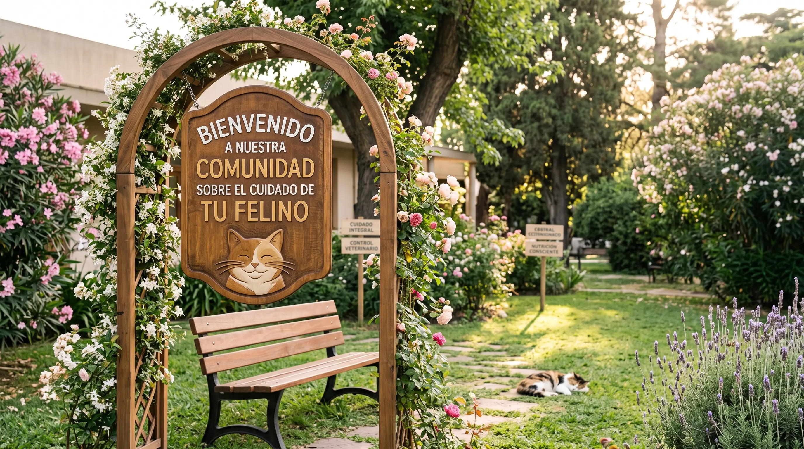

Alimentación consciente
Consejos y planes nutricionales adaptados a cada etapa de la vida de tu gato.
Lugar donde aprenderás el cuidado de los gatos y mucho más.

Brindar ayuda y asesoramiento virtual sobre el cuidado integral de los felinos.
Te ayudamos a mantener el bienestar y una atención continua para tu mascota:
Consejos y planes nutricionales adaptados a cada etapa de la vida de tu gato.
Guías sobre calendarios de vacunación, desparasitación y chequeos periódicos.
Recomendaciones para el cepillado, cuidado del pelaje y corte de uñas sin estrés.
Tips de enriquecimiento ambiental y juegos para fortalecer la convivencia.